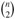

|
|
< Day Day Up > |
|
There are some engineering situations that require no more than a "textbook" data structure-such as a doubly linked list, a hash table, or a binary search tree-but many others require a dash of creativity. Only in rare situations will you need to create an entirely new type of data structure, though. More often, it will suffice to augment a textbook data structure by storing additional information in it. You can then program new operations for the data structure to support the desired application. Augmenting a data structure is not always straightforward, however, since the added information must be updated and maintained by the ordinary operations on the data structure.
This chapter discusses two data structures that are constructed by augmenting red-black trees. Section 14.1 describes a data structure that supports general order-statistic operations on a dynamic set. We can then quickly find the ith smallest number in a set or the rank of a given element in the total ordering of the set. Section 14.2 abstracts the process of augmenting a data structure and provides a theorem that can simplify the augmentation of red-black trees. Section 14.3 uses this theorem to help design a data structure for maintaining a dynamic set of intervals, such as time intervals. Given a query interval, we can then quickly find an interval in the set that overlaps it.
Chapter 9 introduced the notion of an order statistic. Specifically, the ith order statistic of a set of n elements, where i ∈ {1, 2,..., n}, is simply the element in the set with the ith smallest key. We saw that any order statistic could be retrieved in O(n) time from an unordered set. In this section, we shall see how red-black trees can be modified so that any order statistic can be determined in O(lg n) time. We shall also see how the rank of an element-its position in the linear order of the set-can likewise be determined in O(lg n) time.
A data structure that can support fast order-statistic operations is shown in Figure 14.1. An order-statistic tree T is simply a red-black tree with additional information stored in each node. Besides the usual red-black tree fields key[x], color[x], p[x], left[x], and right[x] in a node x, we have another field size[x]. This field contains the number of (internal) nodes in the subtree rooted at x (including x itself), that is, the size of the subtree. If we define the sentinel's size to be 0, that is, we set size[nil[T]] to be 0, then we have the identity
size[x] = size[left[x]] + size[right[x]] + 1.
We do not require keys to be distinct in an order-statistic tree. (For example, the tree in Figure 14.1 has two keys with value 14 and two keys with value 21.) In the presence of equal keys, the above notion of rank is not well defined. We remove this ambiguity for an order-statistic tree by defining the rank of an element as the position at which it would be printed in an inorder walk of the tree. In Figure 14.1, for example, the key 14 stored in a black node has rank 5, and the key 14 stored in a red node has rank 6.
Before we show how to maintain this size information during insertion and deletion, let us examine the implementation of two order-statistic queries that use this additional information. We begin with an operation that retrieves an element with a given rank. The procedure OS-SELECT(x, i) returns a pointer to the node containing the ith smallest key in the subtree rooted at x. To find the ith smallest key in an order-statistic tree T , we call OS-SELECT(root[T], i).
OS-SELECT(x, i) 1 r ← size[left[x]]+1 2 if i = r 3 then return x 4 elseif i< r 5 then return OS-SELECT(left[x], i) 6 else return OS-SELECT(right[x], i - r)
The idea behind OS-SELECT is similar to that of the selection algorithms in Chapter 9. The value of size[left[x]] is the number of nodes that come before x in an inorder tree walk of the subtree rooted at x. Thus, size[left[x]] + 1 is the rank of x within the subtree rooted at x.
In line 1 of OS-SELECT, we compute r, the rank of node x within the subtree rooted at x. If i = r, then node x is the ith smallest element, so we return x in line 3. If i< r, then the ith smallest element is in x's left subtree, so we recurse on left[x] in line 5. If i > r, then the ith smallest element is in x's right subtree. Since there are r elements in the subtree rooted at x that come before x's right subtree in an inorder tree walk, the ith smallest element in the subtree rooted at x is the (i - r)th smallest element in the subtree rooted at right[x]. This element is determined recursively in line 6.
To see how OS-SELECT operates, consider a search for the 17th smallest element in the order-statistic tree of Figure 14.1. We begin with x as the root, whose key is 26, and with i = 17. Since the size of 26's left subtree is 12, its rank is 13. Thus, we know that the node with rank 17 is the 17 - 13 = 4th smallest element in 26's right subtree. After the recursive call, x is the node with key 41, and i = 4. Since the size of 41's left subtree is 5, its rank within its subtree is 6. Thus, we know that the node with rank 4 is the 4th smallest element in 41's left subtree. After the recursive call, x is the node with key 30, and its rank within its subtree is 2. Thus, we recurse once again to find the 4 × 2 = 2nd smallest element in the subtree rooted at the node with key 38. We now find that its left subtree has size 1, which means it is the second smallest element. Thus, a pointer to the node with key 38 is returned by the procedure.
Because each recursive call goes down one level in the order-statistic tree, the total time for OS-SELECT is at worst proportional to the height of the tree. Since the tree is a red-black tree, its height is O(lg n), where n is the number of nodes. Thus, the running time of OS-SELECT is O(lg n) for a dynamic set of n elements.
Given a pointer to a node x in an order-statistic tree T, the procedure OS-RANK returns the position of x in the linear order determined by an inorder tree walk of T.
OS-RANK(T, x) 1 r ← size[left[x]] + 1 2 y ← x 3 while y ≠ root[T] 4 do if y = right[p[y]] 5 then r ← r + size[left[p[y]]] + 1 6 y ← p[y] 7 return r
The procedure works as follows. The rank of x can be viewed as the number of nodes preceding x in an inorder tree walk, plus 1 for x itself. OS-RANK maintains the following loop invariant:
At the start of each iteration of the while loop of lines 3-6, r is the rank of key[x] in the subtree rooted at node y.
We use this loop invariant to show that OS-RANK works correctly as follows:
Initialization: Prior to the first iteration, line 1 sets r to be the rank of key[x] within the subtree rooted at x. Setting y ← x in line 2 makes the invariant true the first time the test in line 3 executes.
Maintenance: At the end of each iteration of the while loop, we set y ← p[y]. Thus we must show that if r is the rank of key[x] in the subtree rooted at y at the start of the loop body, then r is the rank of key[x] in the subtree rooted at p[y] at the end of the loop body. In each iteration of the while loop, we consider the subtree rooted at p[y]. We have already counted the number of nodes in the subtree rooted at node y that precede x in an inorder walk, so we must add the nodes in the subtree rooted at y's sibling that precede x in an inorder walk, plus 1 for p[y] if it, too, precedes x. If y is a left child, then neither p[y] nor any node in p[y]'s right subtree precedes x, so we leave r alone. Otherwise, y is a right child and all the nodes in p[y]'s left subtree precede x, as does p[y] itself. Thus, in line 5, we add size[left[p[y]]] + 1 to the current value of r.
Termination: The loop terminates when y = root[T], so that the subtree rooted at y is the entire tree. Thus, the value of r is the rank of key[x] in the entire tree.
As an example, when we run OS-RANK on the order-statistic tree of Figure 14.1 to find the rank of the node with key 38, we get the following sequence of values of key[y] and r at the top of the while loop:
|
iteration |
key[y] |
r |
|---|---|---|
|
|
||
|
1 |
38 |
2 |
|
2 |
30 |
4 |
|
3 |
41 |
4 |
|
4 |
26 |
17 |
The rank 17 is returned.
Since each iteration of the while loop takes O(1) time, and y goes up one level in the tree with each iteration, the running time of OS-RANK is at worst proportional to the height of the tree: O(lg n) on an n-node order-statistic tree.
Given the size field in each node, OS-SELECT and OS-RANK can quickly compute order-statistic information. But unless these fields can be efficiently maintained by the basic modifying operations on red-black trees, our work will have been for naught. We shall now show that subtree sizes can be maintained for both insertion and deletion without affecting the asymptotic running time of either operation.
We noted in Section 13.3 that insertion into a red-black tree consists of two phases. The first phase goes down the tree from the root, inserting the new node as a child of an existing node. The second phase goes up the tree, changing colors and ultimately performing rotations to maintain the red-black properties.
To maintain the subtree sizes in the first phase, we simply increment size[x] for each node x on the path traversed from the root down toward the leaves. The new node added gets a size of 1. Since there are O(lg n) nodes on the traversed path, the additional cost of maintaining the size fields is O(lg n).
In the second phase, the only structural changes to the underlying red-black tree are caused by rotations, of which there are at most two. Moreover, a rotation is a local operation: only two nodes have their size fields invalidated. The link around which the rotation is performed is incident on these two nodes. Referring to the code for LEFT-ROTATE(T, x) in Section 13.2, we add the following lines:
12 size[y] ← size[x]
13 size[x] ← size[left[x]] + size[right[x]] + 1
Figure 14.2 illustrates how the fields are updated. The change to RIGHT-ROTATE is symmetric.
Since at most two rotations are performed during insertion into a red-black tree, only O(1) additional time is spent updating size fields in the second phase. Thus, the total time for insertion into an n-node order-statistic tree is O(lg n), which is asymptotically the same as for an ordinary red-black tree.
Deletion from a red-black tree also consists of two phases: the first operates on the underlying search tree, and the second causes at most three rotations and otherwise performs no structural changes. (See Section 13.4.) The first phase splices out one node y. To update the subtree sizes, we simply traverse a path from node y up to the root, decrementing the size field of each node on the path. Since this path has length O(lg n) in an n-node red-black tree, the additional time spent maintaining size fields in the first phase is O(lg n). The O(1) rotations in the second phase of deletion can be handled in the same manner as for insertion. Thus, both insertion and deletion, including the maintenance of the size fields, take O(lg n) time for an n-node order-statistic tree.
Show how OS-RANK(T, x) operates on the red-black tree T of Figure 14.1 and the node x with key[x] = 35.
Write a recursive procedure OS-KEY-RANK(T, k) that takes as input an order-statistic tree T and a key k and returns the rank of k in the dynamic set represented by T . Assume that the keys of T are distinct.
Given an element x in an n-node order-statistic tree and a natural number i, how can the ith successor of x in the linear order of the tree be determined in O(lg n) time?
Observe that whenever the size field of a node is referenced in either OS-SELECT or OS-RANK, it is used only to compute the rank of the node in the subtree rooted at that node. Accordingly, suppose we store in each node its rank in the subtree of which it is the root. Show how this information can be maintained during insertion and deletion. (Remember that these two operations can cause rotations.)
Show how to use an order-statistic tree to count the number of inversions (see Problem 2-4) in an array of size n in time O(n lg n).
Consider n chords on a circle, each defined by its endpoints. Describe an O(n lg n)-time algorithm for determining the number of pairs of chords that intersect inside the circle. (For example, if the n chords are all diameters that meet at the center, then the correct answer is .) Assume that no two chords share an endpoint.
|
|
< Day Day Up > |
|